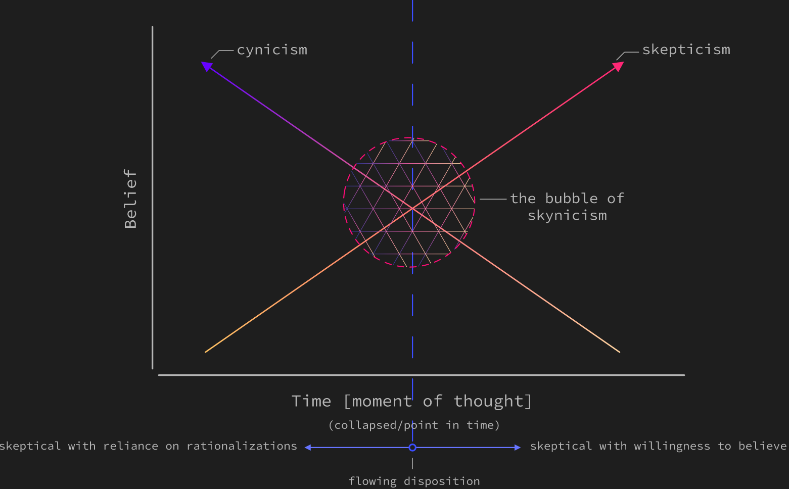
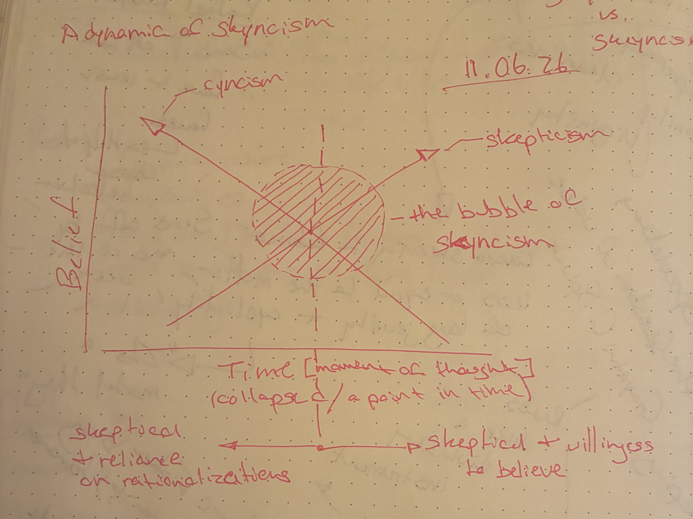

Oree's Storees © 2026 is licensed under CC BY-NC-SA 4.0


Before starting this discussion, I’ll define some things so we are all generally on the same page. All sourced from wikipedia besides “skynicism”.
Cynicism (contemporary): “An attitude characterized by a general distrust of the motives of others and a lack of faith in other human beings, in the belief that humans are selfish by nature. A cynic may have a general lack of faith or hope in humanity in general or in people motivated by ambition, desire, greed, gratification, materialism, change, goals, and opinions that a cynic perceives as vain, unobtainable, or ultimately meaningless.”
Skepticism: “A questioning attitude or doubt toward knowledge claims that are seen as mere belief or dogma. For example, if a person is skeptical about claims made by their government about an ongoing war then the person doubts that these claims are accurate. In such cases, skeptics normally recommend not disbelief but suspension of belief, i.e. maintaining a neutral attitude that neither affirms nor denies the claim.”
Pessimism: “The mental attitude of expecting upsetting or undesirable outcomes. Pessimists tend to focus on the negatives of life in general.”
Rationalization: “A defense mechanism (ego defense) in which apparent logical reasons are given to justify behavior that is motivated by unconscious instinctual impulses. It is an attempt to find reasons for behaviors, especially one's own. Rationalizations are used to defend against feelings of guilt, maintain self-respect, and protect oneself from criticism.” [how to spot your own rationalizations]
Skynicism [ver. 1]: The questioning attitude in which one investigates in a way that feigns a genuine, unbiased disposition (skeptical appearance), yet intrinsically disregards evidence surrounding the subject as their bias has already concluded any outcome as “non-plausible in any sincere way” (the cynicism).
(╭ರ_•́)

After watching “House” and “The Residence”, I have become very interested in the practice of not drawing conclusions. Not drawing conclusions being: me not letting my bias towards whatever I am presented with sway me in any emotive way until all available evidence has been provided and thoroughly investigated. In this matter of not drawing conclusions, it has become easier to recognize disingenuous questioning and commentary. Disingenuous being: the projection of negativity as fact onto others which is driven by said projector’s own belief that the subject of the matter is insincere (aka a working of cynicism). I’ve noticed, mainly through YouTube comments, people can detect a cynical comment, but they often conflate with skepticism. That rubs me the wrong. A large of me making this diagram and this discussion is to engage this conflation and understand the distinctions between cynicism and skepticism because I think calling a cynical comment/question “skeptical” does not nearly put it in as much arrest as it should [and I try not to say shoulds]. And why do I think it should? Because it’s easier to believe in the bad than to believe in the good.
Why are we okay with defaulting to the worst possible outcome?
( ꩜ ᯅ ꩜;)
A short list of my findings on this matter thus far:
What I have witnessed thus far has helped me understand further how cynicism is a reactive fear response utilized as a crutch. One chooses to defeat oneself at the starting point of a matter/scenario/event/relationship/etc as they believe they are protecting themselves/others from the feelings of a destroyed expectation/hope/belief (“I don’t want to get my hopes up”). One think they can only go up if they already sent themselves done, but that peculates into how you move, whether you intend it to or not.
Think what you want, go about whatever how you want; all I can say is, starting energy matters most.
¯\_(- > -)_/¯
Now I’ll present this hypothetical to place skynicism in a scenario. This bit is an abbreviation of this Youtube video that was the final nail in the coffin leading me to drawing the skynicism diagram:
“An agnostic (the skynic) disapproves of a Christian couple (the subject) who are making a testimony of their divinely orchestrated love by God. In this case, the evidence is repeated coincidence. The agnostic does not believe in these coincidences (we’ll come back to this). The agnostic believes in the insincerity of the husband and therefore further devalues the evidence. Proxy to this, the agnostic is distrustful/unconvinced by the wife’s intuition/perspective of the matter. The agnostic does not believe either of these people are autonomous in their choices, but instead believes they have been thoroughly coached/externally “coerced” by their respective faith leaders to jump onto any marriage bait. The agnostic values their life experience, having grown up strictly religious, and uses their knowledge, not separate from their bias, to invalidate specifically the husband.”
My question is: well, what evidence would make an agnostic believe in a spiritual love? (lol)
Me using this hypothetical isn’t to counter the agnostic presenter, as I think they make solid points mixed with rationalizations, nor to support the Christian couple, even though I do trust in the sanctity of their love. Rather, I am curious as to why one stranger on the internet has such a down turned opinion of another strangers’ good fortune. I think the two biggest factors of this are the fact the couple are making a testimony and the publicity of their love.
First off, the biggest hitch of this matter is we have a non-believer trying to prove believers wrong, which is like an uphill battle faith-wise. Because of these starting dispositions, the presenter can only rely on their knowledge, which is tinted with bias, to deconstruct the testimony of the couple in order to convince the audience why they are right about their marriage being a “worst case scenario”/deeply unwise. So, what is the worst case scenario actually? I suppose it is that two young people are getting very quickly married, via various structured means of coercion, that will eventually lead to an unhappy marriage or long term emotional distress… To be honest, I don’t know what the worst case scenario is. The video merely implies that, now that I think about it.
I am not interested in getting into all the rationalizations in the video because that’s a lot of work, but what’s interesting is: in order for the presenter to be convincing at all, the audience witnesses the biggest rationalization that is never talked about, yet makes up the entire video. This being: the presenter auto-opting the couple’s character as insincere/deceptive; and therefore, dangerous because of they are Christians. That’s the whole thesis. That’s way they think we shouldn’t trust the married couple's testimony. Because if we, the audience, were to think their character is sincere, we might just be willing to believe in them/that magic and then we subscribe to the Christian faith and get scammed by it. There's a lot of implications going on. I don't truly know what they presenter is trying to PSA about. Like I do and I don't. I can understand the presenter’s stance on this because religion, specifically Christianity, being used as a hierarchical controller is more often that not true, but that doesn’t make all of it’s participants capable of or interested in wielding it in such a way. That is a conflating thought. People can practice their faith and be led it by genuinely, whether we like to believe it or not. Even Christians lol. Even if we are to entertain the insincerity of the couple of their marriage only time will reveal the harm that is done. All in all, that video relies on me filling too much of a blank and questioning very little for me to agree fully with the presenter's opinion.
Funny enough about the coincidences though, I found it intriguing that the presenter said they were “oddly inspired” by the way it led the couple to each other. They said they don’t think people should make decisions off those alone and at first I think I had some type of a problem with that, but now that I write this I’m like “word”. I’ll take what I can get in the “skynic/cynic believing in magic” department.
(• ε •)
All this hullabaloo ends us a diagrammatic question: why is skynicism a bubble? Skynicism is a bubble because I believe in redemption. Someone can be more skeptical than cynical and, with much more ease, willing to believe in [a subject’s] sincerity. So can the someone who is more cynical than skeptical. Its just an inclusive territory.
I initially had a lot of questions after all of this:
But then I came to my own conclusion that it is not my job to convince the skynic. They have to figure that out.
( ◡̀_◡́)ᕤ
All in all after everything I wrote I think the most important matter this is: when calling out the skynic, one has to be careful about themselves asserting this position of correctness authority. I suppose in order to call out the skynic without inflating the ego is simply a matter of keeping things at kind and curious “well, why do you think that?” The one conscious way I work to stop my ego from grappling onto concept (the desire to make myself some epitome of knowledge or founder of anything) is to remember that, at the end of the day, I am always meant to be questioned with no expectation of being agreeable and above all else, am just as mediocre as the cynic. I’m just not actively putting energy towards the worst.
Anyway, maybe this widens your lens or you feel deep disagreement or some other third thing. I am curious.
Okay bye.
Oree's Storees © 2026 is licensed under CC BY-NC-SA 4.0



[BONUS: The og skynicism sketch. It was such a eureka moment. Felt wrong to leave it out.]